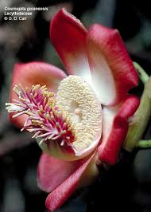

Lecythidaceae
Brazil Nut Family / Monkey Pot Family
Lecythidaceae is a family of dicotyledonous flowering plants in the order Ericales, comprising mostly large tropical trees native to the Neotropics and some Old World tropical regions. The family is famous for producing the Brazil nut (Bertholletia excelsa) and is characterized by large, simple leaves often clustered at branch tips, showy flowers with numerous stamens often fused into a distinctive hood, and large woody capsules ('monkey pots') or fleshy fruits.
Overview
The Lecythidaceae family includes about 24 genera and approximately 300 species of trees (rarely shrubs). The vast majority of species are found in the tropical rainforests of Central and South America (Neotropics), with a smaller number occurring in tropical Africa (subfamily Napoleonaeoideae) and Madagascar (subfamily Foetidioideae). Many members are large canopy or emergent trees, playing significant roles in the structure and ecology of tropical forests.
These trees often have large, simple, alternate leaves that tend to cluster towards the ends of branches. The flowers are frequently large and showy, with a remarkable androecium (stamen structure). Typically, there are numerous stamens (often hundreds), usually fused at the base into a ring, which may be elaborated on one side into a strap-like or hood-like structure (ligule or staminal hood) arching over the ovary. This hood often bears sterile stamens (staminodes). The fruit is another striking feature, commonly a large, heavy, woody capsule (pyxidium) that opens by a lid (operculum), often called a "monkey pot." Inside are large seeds, sometimes winged or with an aril. The Brazil nut (Bertholletia excelsa) is a well-known example, where the "nuts" we eat are actually seeds packed inside one of these large woody capsules.
Economically, the family is important for the Brazil nut industry and provides valuable timber from various genera (e.g., Eschweilera, Couratari). Some species, like the Cannonball Tree (Couroupita guianensis), are cultivated as curiosities for their large, unusual flowers and fruits borne directly on the trunk (cauliflory). Phylogenetically, Lecythidaceae belongs to the order Ericales, within the Asterid clade of eudicots.
Quick Facts
- Scientific Name: Lecythidaceae A.Rich.
- Common Name: Brazil Nut Family, Monkey Pot Family
- Number of Genera: Approximately 24
- Number of Species: Approximately 300
- Distribution: Primarily Neotropics, also Tropical Africa and Madagascar
- Evolutionary Group: Eudicots - Asterids - Ericales
Key Characteristics
Growth Form and Habit
Trees (small to very large canopy or emergent trees), rarely shrubs. Often with buttressed trunks.
Leaves
Leaves are simple, alternate (spirally arranged), often large, petiolate, with margins typically entire or crenate/serrate. They are frequently clustered towards the ends of branches. Stipules are small and deciduous or absent.
Inflorescence
Flowers are borne solitarily or in terminal or axillary racemes or panicles.
Flowers
Flowers are usually large, showy, bisexual, and actinomorphic (radially symmetrical) or zygomorphic (bilaterally symmetrical) due to the androecium. Key features include:
- Calyx: 4-6 sepals, free or fused at the base, often persistent.
- Corolla: 4-6 petals (sometimes absent or highly modified, e.g., Napoleonaeoideae), free, often fleshy or thick, white, yellow, pink, red, or purplish.
- Androecium: Stamens are numerous (often >100, up to 1000+). Filaments are typically fused at the base into a ring that is often prolonged on one side into a strap-like or hood-like structure (ligule or staminal hood) arching over the ovary. This hood frequently bears staminodes (sterile stamens) or differently shaped fertile stamens. The basal ring bears fertile stamens.
- Gynoecium: Ovary is usually inferior (sometimes half-inferior or rarely superior), composed of 2-8 fused carpels forming 2-8 locules. Placentation is axile with 1 to many ovules per locule. A single style is present, often long.
Fruits and Seeds
The fruit is typically a large, woody capsule that opens by a circumscissile lid (an operculum), known as a pyxidium or 'monkey pot'. Less commonly, the fruit is large, fleshy, and indehiscent (e.g., Bertholletia, Couroupita). Seeds are often large, sometimes winged or possessing an aril or fleshy funicle. The Brazil nut is the seed of Bertholletia excelsa.
Chemical Characteristics
The family may contain saponins, tannins, cyclitols (like (+)pinitol), and selenium accumulation is known in Brazil nuts. They lack the compound leaves and apocarpous gynoecium of Lardizabalaceae.
Field Identification
Identifying Lecythidaceae trees often relies on their large size, distinctive leaves, flowers, and especially fruits:
Primary Identification Features
- Habit: Mostly large tropical trees.
- Leaves: Simple, alternate, often large and clustered at branch tips.
- Flowers: Usually large and showy, with numerous stamens fused into a basal ring, often with a staminal hood arching over the ovary.
- Ovary Position: Ovary usually inferior.
- Fruit: Large, woody capsule (pyxidium/'monkey pot') opening by a lid, or a large fleshy indehiscent fruit.
- Seeds: Often large (e.g., Brazil nuts).
Secondary Identification Features
- Flower Symmetry: Actinomorphic or zygomorphic (due to androecium).
- Petal Number: Usually 4-6, sometimes absent.
- Habitat: Tropical rainforests (mostly Neotropical).
- Cauliflory: Flowers/fruits borne directly on the trunk in some species (e.g., Couroupita).
Seasonal Identification Tips
- Flowering Season: Varies geographically; flowers are often conspicuous when present.
- Fruiting Season: The large, heavy woody capsules or fleshy fruits are highly diagnostic and often found on the forest floor after falling.
- Vegetative State: Large trees with simple alternate leaves clustered at branch tips can suggest the family, but confirmation requires reproductive parts.
Common Confusion Points
Large tropical trees can be difficult to identify, but Lecythidaceae features are quite distinct:
- Sapotaceae: Also in Ericales. Trees often with latex, simple alternate leaves (sometimes clustered), flowers usually smaller with staminodes alternating with fertile stamens, superior ovary, fruit a berry. Lack the staminal hood and woody pyxidium.
- Clusiaceae (Guttiferae): Often have opposite leaves and colored latex. Flowers may have numerous stamens but usually not fused into a complex hood; fruit often a berry or capsule. (Malpighiales).
- Malvaceae (Bombacoideae - e.g., Kapok, Baobab): Large tropical trees, but often have palmately compound leaves, flowers with stamens fused into a tube around the style (monadelphous), and different fruit types (capsules with floss, etc.).
- Myrtaceae (Myrtle family): Trees/shrubs often with opposite, simple, entire leaves containing aromatic oil glands. Flowers usually have numerous free stamens and an inferior ovary, but lack the staminal hood. Fruit a berry or capsule.
Field Guide Quick Reference
Look For:
- Large tropical trees
- Leaves simple, alternate, clustered at tips
- Flowers large, showy
- Numerous stamens fused into ring/hood
- Ovary usually inferior
- Fruit a large woody pyxidium ('monkey pot') or fleshy
Key Variations:
- Flower symmetry (radial vs. bilateral)
- Staminal hood presence/shape
- Fruit type (woody capsule vs. fleshy)
- Seed structure (winged, arillate, etc.)
Notable Examples
The family includes economically important species and trees with remarkable flowers and fruits.

Bertholletia excelsa
Brazil Nut
A massive emergent tree native to the Amazon rainforest. Produces large, round, heavy, woody fruits (capsules) containing 8-24 large, triangular seeds – the Brazil nuts of commerce. Pollination relies on specific large-bodied bees.

Lecythis pisonis
Sapucaia Nut / Monkey Pot
A large tree native to South America. Produces the classic large, woody 'monkey pot' fruit (a pyxidium) which opens via a lid, releasing large, edible seeds (Sapucaia nuts), often dispersed by bats attracted to the fleshy funicle.

Couroupita guianensis
Cannonball Tree
Native to tropical South America, widely planted as a curiosity. Famous for its large, fragrant, complex flowers and large, round, heavy, fleshy fruits borne directly on the trunk (cauliflory). Fruits resemble cannonballs.

Eschweilera coriacea
(Various local names)
Represents a large genus (Eschweilera) of Neotropical trees, often dominant in rainforests. Typically have woody pyxidium fruits similar to Lecythis but often smaller. Important timber source locally.
Phylogeny and Classification
Lecythidaceae is placed in the large and diverse order Ericales, which belongs to the Asterid clade of eudicots. This order includes families with vastly different appearances, ranging from woody trees and shrubs to herbaceous plants and even parasitic plants.
Within Ericales, Lecythidaceae is sister to the family Sapotaceae (Sapodilla family). Together, Lecythidaceae and Sapotaceae form a clade that is related to other major families in the order, such as Ebenaceae (Ebony family) and Primulaceae sensu lato (Primrose family, including Myrsinaceae and Theophrastaceae). This core group is distinct from the basal lineages of Ericales (like Balsaminaceae, Marcgraviaceae) and the large ericoid clade (including Ericaceae, Cyrillaceae, Clethraceae, etc.).
Position in Plant Phylogeny
- Kingdom: Plantae
- Clade: Angiosperms (Flowering plants)
- Clade: Eudicots
- Clade: Asterids
- Order: Ericales
- Family: Lecythidaceae
Evolutionary Significance
Lecythidaceae is significant for several evolutionary reasons:
- Tropical Tree Diversity: Represents a major component of Neotropical rainforest diversity, particularly among large canopy and emergent trees.
- Floral Specialization: The complex androecium (numerous stamens fused into a ring and hood) represents a remarkable evolutionary innovation related to specialized pollination, often by large bees.
- Fruit and Seed Dispersal: The evolution of the large, woody pyxidium ('monkey pot') and associated large seeds involves interactions with specific animal dispersers (e.g., agoutis for Brazil nuts, bats for Sapucaia nuts).
- Phylogenetic Position: Its placement within Ericales, sister to Sapotaceae, helps clarify relationships within this major Asterid order.
- Economic Importance: The Brazil nut provides a key example of a non-timber forest product harvested from wild populations, highlighting ecological and economic links.